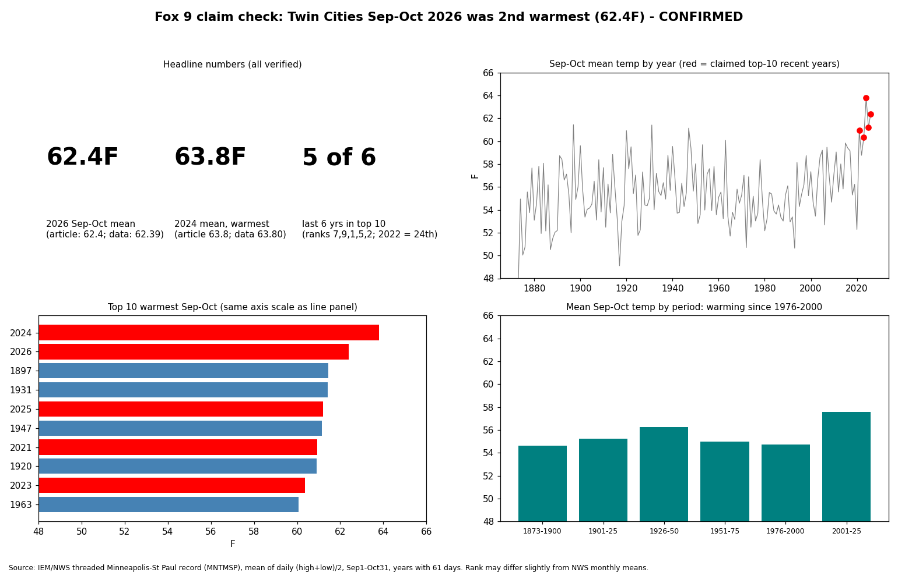

Fact check: Fox 9, "Twin Cities records 2nd-warmest September, October in 2026"

Every checkable claim holds up: 0 Pinocchios
The Twin Cities' September-October 2026 mean was 62.39 F (article: 62.4), second to 2024 at 63.80 F (article: 63.8). All figures were reproduced from the NWS/IEM threaded Minneapolis-St Paul record (61 days per year, mean of daily high and low).
- Top-10 claim: 2021 ranks 7th, 2023 9th, 2024 1st, 2025 5th, 2026 2nd; 2022 ranks 24th. So five of the last six years are top 10, as stated.
- Warming "for at least two decades": 2001-2025 averaged 57.6 F versus 54.7 F for 1976-2000; the trend since 2001 is about +2 F per decade (n=26, noisy, short window). Supported, loosely worded.
- Matz comments are paraphrases, with no direct quotes. His view that warm falls may feel normal is opinion, not checkable.
- Caveats: my series ranks start in 1873 (1872 incomplete or missing in this source), so "since 1872" was not confirmed to the year. NWS may compute from monthly means, so rankings could differ in the second decimal. 2024 beating 2026 by 1.4 F is a wide margin.
- Nothing materially misleading: it is a single-station, two-month ranking. It does not claim attribution to climate change and is not statewide.
Claim table
| Claim | Result |
|---|
| 2026 second warmest, 62.4 F | Verified, 62.39 |
| 2024 warmest, 63.8 F | Verified, 63.80 |
| 5 of last 6 years in top 10; 2021, 2023, 2025 included | Verified |
| Records since 1872 | Not checkable to 1872; source starts 1873 in complete years |
| Matz: warmed at least two decades | Supported |
| Matz: may feel normal / cold by comparison | Opinion, not checkable |
Sources
- Fox 9 article, https://www.fox9.com/weather/twin-cities-records-2nd-warmest-september-october-2026 (read via fetch summary, not verbatim)
- Iowa Environmental Mesonet, coop.py, network MNCLIMATE, station MNTMSP (NWS threaded record), https://mesonet.agron.iastate.edu/
Confidence: high on numbers and ranks; medium on the 1872 start.